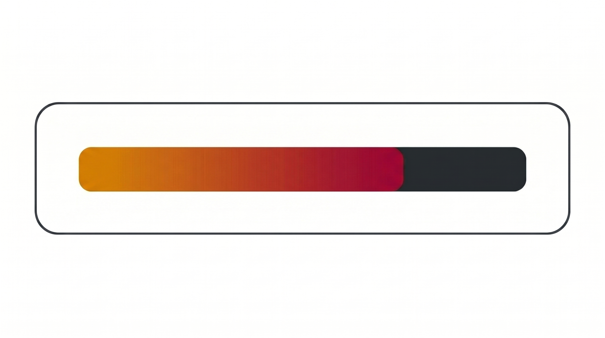
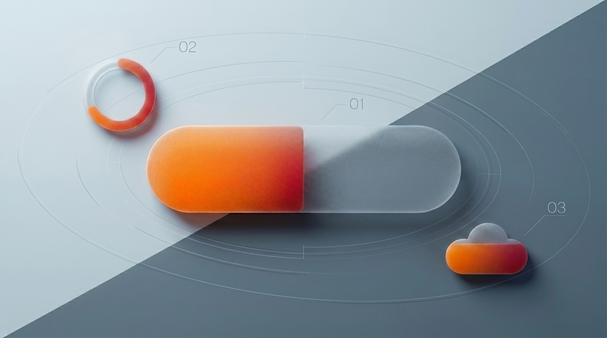
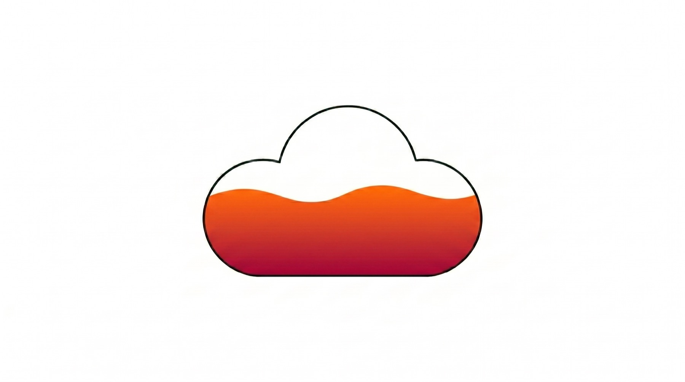
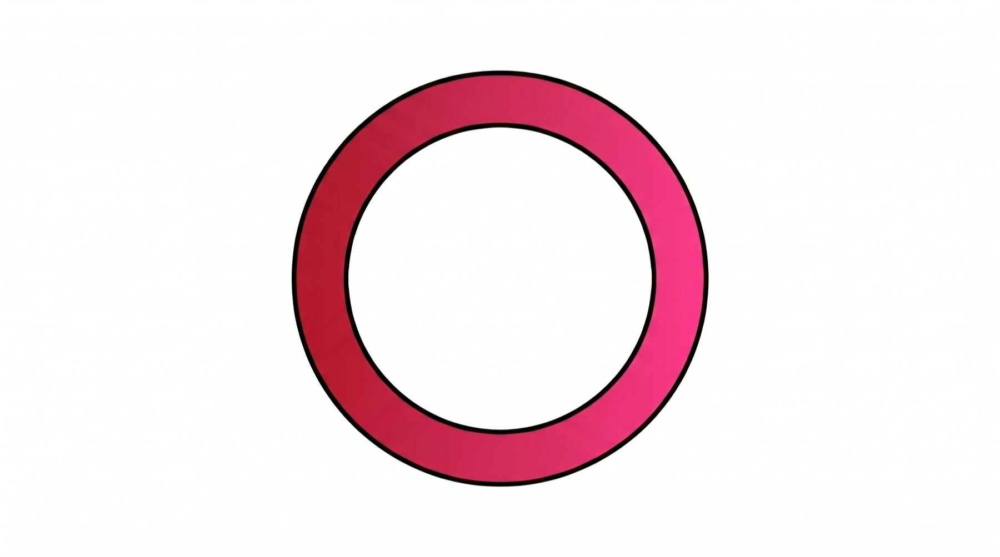
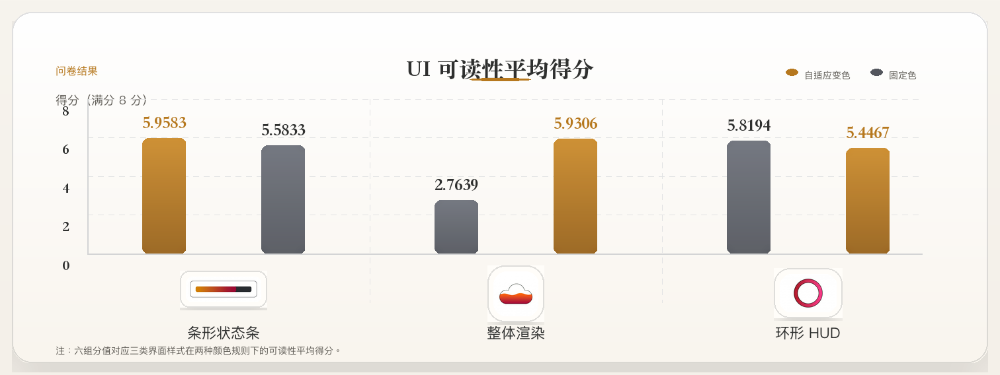

条形状态条
最常见，也最容易一眼看懂。但如果颜色固定，遇到复杂背景也最容易撞色。


01 用户研究
这是一个用户体验研究项目。我研究的是：动态变色的 UI，究竟会怎样影响清晰度和整体体验。
很多产品都会在状态变化时让界面跟着变色，但这件事到底是在帮用户，还是只是在制造更多干扰，往往说不清。这次我想把这个问题讲明白，再用实验去验证。
02 问题
比如你在跑步时看运动手表，或者在开车时瞄一眼导航。外面的光线、路况、背景都在变。如果界面也一直跟着变色，你第一反应不一定是“更清楚了”，也可能是“它为什么突然变了”。所以我真正想研究的是：动态变色的 UI，到底是在提升可读性和用户体验，还是在增加新的负担。
先说清到底在研究什么。
先整理真实界面里最常见的做法。
把比较对象做进同一套原型里。
让真实用户完成任务并留下反馈。
一起看问卷和采访结果。
把结果整理成能直接用的判断。
03 样本
我先整理了 160 个真实产品里的 UI，再按状态信息挂在哪里、变化覆盖多大来分类。最后出现频率最高的是三类：条形状态条、整体渲染、环形 HUD。这样后面的测试，会沿着真实产品里最常见的方案展开。
最后留下来的 3 类高频类型

最常见，也最容易一眼看懂。但如果颜色固定，遇到复杂背景也最容易撞色。

提醒最强，状态变化很直接。但一旦变得太勤，用户最容易觉得整块界面在闪。

更集中，也更省空间。清晰度会更依赖轮廓和对比的清晰程度。
04 实验
我比较的是三种样式在同一动态场景下的体验差异。问卷先看趋势，采访再解释原因。
我在 Unity 里搭了一套统一场景，把三种样式和两种颜色规则放进同一任务里。
24 名用户都走完同一流程，保证每组比较都在同一个口径下完成。
前测先看基础习惯，后测再看不同样式下的主观体验变化，把趋势先拉出来。
采访继续回答一个问题：用户为什么会觉得清楚、困惑、累，或者被打扰。
05 结果
问卷先把趋势拉出来，采访再解释为什么会这样。最后看清的是：它什么时候能帮用户更快看清，什么时候又会开始打扰人。
问卷结果
先看分数，趋势已经很清楚了。变色在部分样式里更容易被看见，但变化一旦太频繁、太满，整体体验的收益就会开始回落。

只有“整体渲染”这一类样式，在自适应变色后出现了更明显的提升；条形状态条和环形 HUD 的差异并不显著。
采访结果
采访里反复出现的是三类判断：什么时候更清楚，什么时候开始误解，什么时候盯久了会累。
更容易看见“只要对比度高，我觉得就比较容易看清。”
会带来额外联想“主要的影响在于我习惯把它当成血条。当血条改变颜色时，我会想这是否代表了另一种功能，或者预示着一个不同的角色身份。”
会积累视觉疲劳“盯动态颜色更伤眼，也更容易累。作为一名有点色弱的人，我觉得辨认起来有些困难。”
最后判断
真正有效的做法，是把变色留给两个时刻：背景干扰高、需要快速拉开对比时；或者状态跨过关键阈值、用户确实需要被提醒时。
一旦颜色变化开始改写用户原有理解，或频率高到让人持续分心，清晰度收益就会被误读和疲劳抵消。这也是我后面把结论收成设计规则的原因。
06 规则
我把前面的研究结论，收成了 3 条可以直接判断的规则。
先看这个颜色在用户心里承接了什么熟悉含义。像血量这种默认就是红色的东西，贸然改色，用户可能先困惑。
先确认这个颜色适不适合改动，再进入后面的频率和阈值判断。
别让界面跟着背景一闪一闪地变。宁可慢一点，也要先稳住。
变化一旦太勤，清晰度收益很容易被疲劳感抵消。
把变色集中到关键节点，平时保持安静。
把变色留给真正需要提醒的时刻，让界面在其余时间保持稳定。
07 价值
我能完整推进用户研究，也能把模糊问题整理成可验证的设计判断。
这个项目从问题定义开始，经过样本整理、实验设计、原型搭建、问卷和访谈执行，一直到结果分析与规则提炼，完整体现了我推进用户研究的能力。面对一开始很难直接讨论清楚的设计问题，我可以先建立判断口径，再把它转成可测试的原型、可分析的数据，以及团队后续能够继续使用的设计规则。